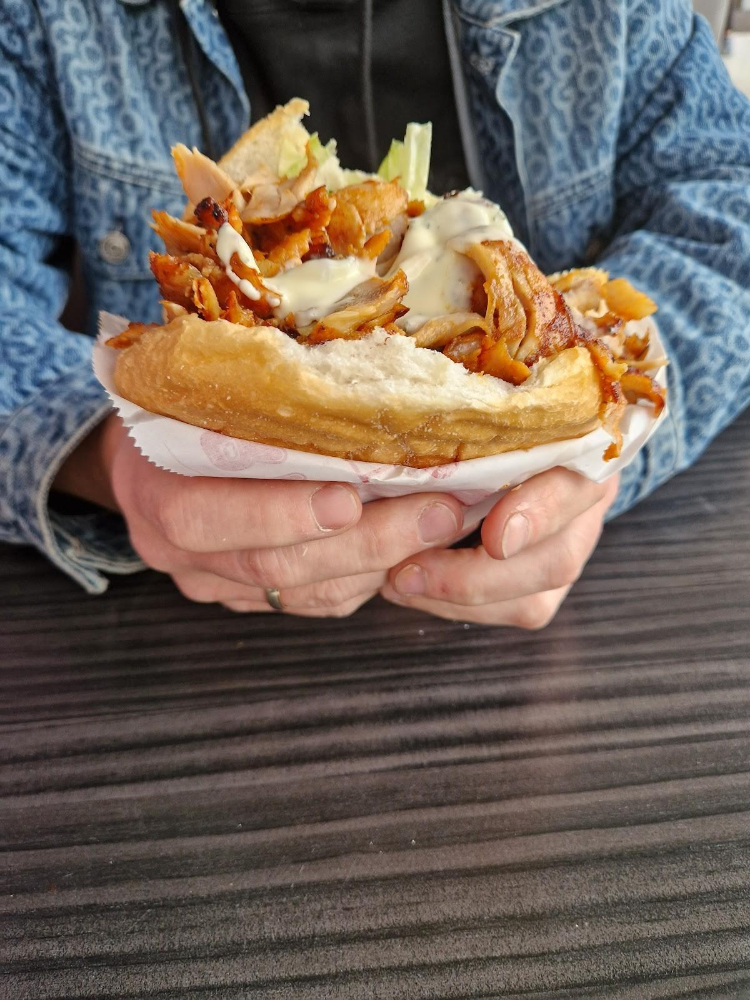
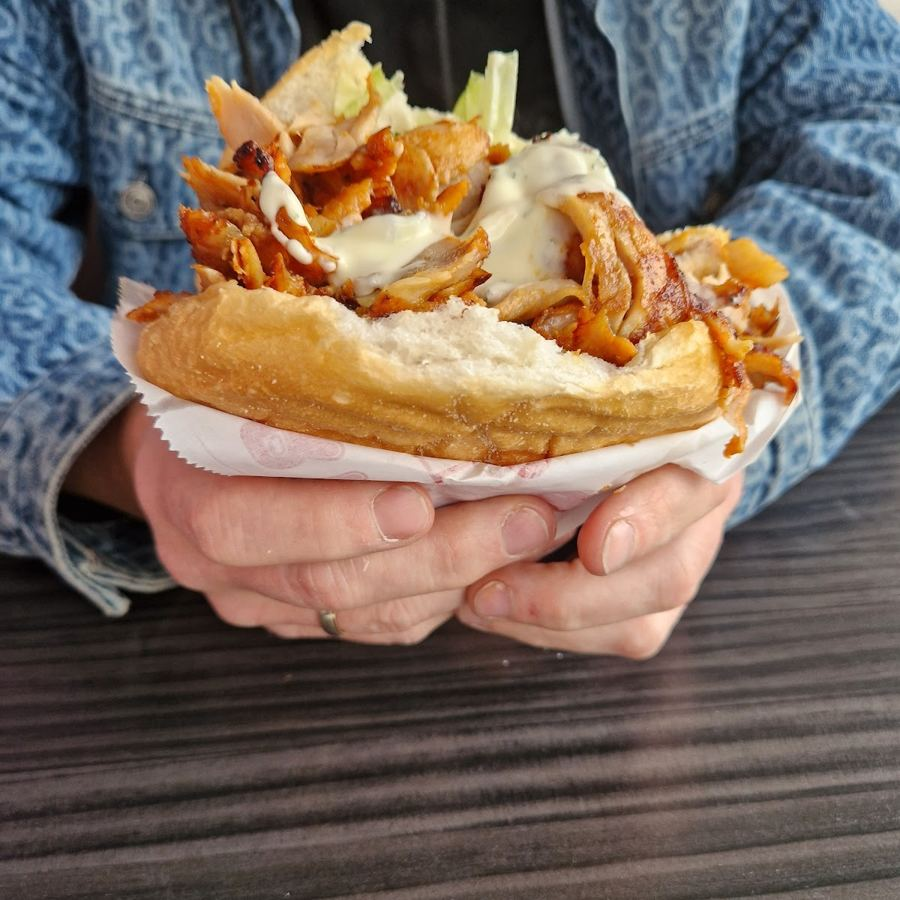
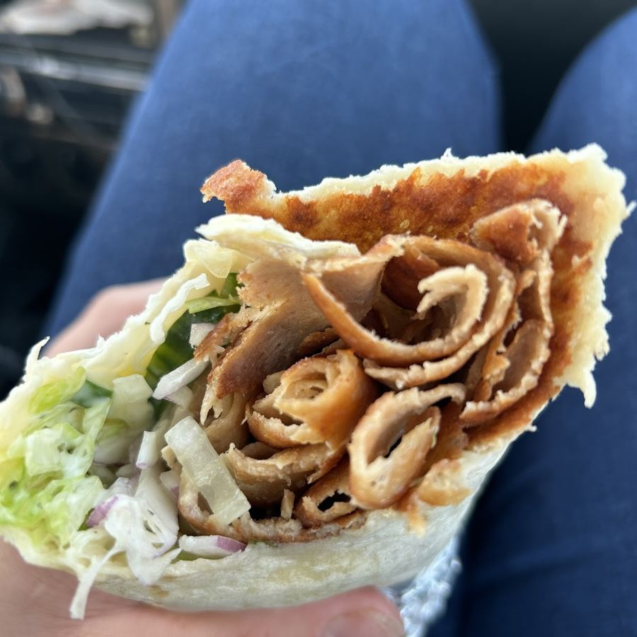
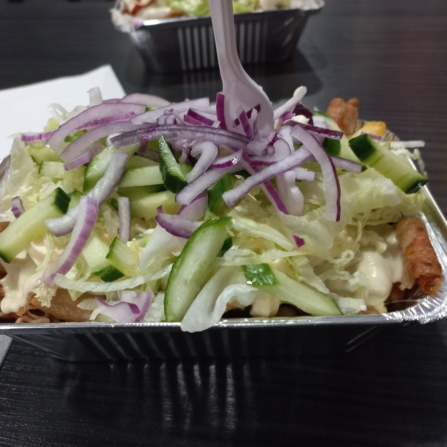
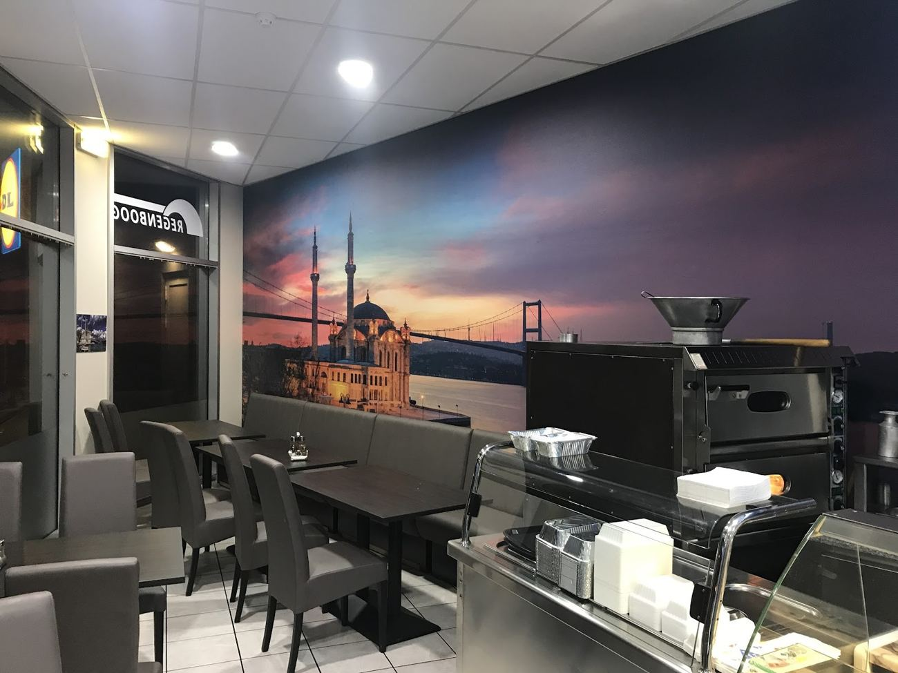

Verse döner aan de Antwerpsestraatweg
Broodje döner, dürüm of kapsalon, om mee te nemen of om lekker binnen op te eten. Elke dag open in Bergen op Zoom.
"Heerlijk en eerlijke maaltijden, dit is met afstand de beste döner die ik ooit heb gehad."Ard O, Google-review
Wat mag het zijn?
Vers en goed gevuld.

Broodje döner
Turks brood, goed gevuld met döner, sla en saus.

Dürüm
Döner met sla en saus, opgerold in een dun broodje.

Kapsalon
Friet met döner of kip, kaas en een frisse salade erover.
Benieuwd naar de hele kaart en de prijzen? Bel ons even of kom langs.
Wat klanten zeggen
"Wij komen hier regelmatig om een maaltijd af te halen. Zeer vriendelijke mensen en de kwaliteit van het eten is super goed! Voor ons de beste in de regio"
xViibeZ- · Google"Super lekker eten en als je er langer komt dan weten ze precies wat je moet hebben.En ze zijn altijd vriendelijk ."
Marian Verheezen · Google"In ieder geval de beste in de buurt al een lange tijd. Waar andere minder worden blijft de kwaliteit hier altijd hoog."
Milan van Lien · Google"Het eten is hier zoooo lekker en superveel en vers."
maai m · Google
Afhalen of binnen eten
Bij De Regenboog haal je je eten op, maar je kunt ook gewoon gaan zitten. In de zaak staan genoeg tafels, met Istanbul aan de muur.
Je vindt ons aan de Antwerpsestraatweg 86, met gratis parkeren voor de deur.
Bestellen en afhalen
Bel je bestelling door
Op 06 15 50 33 81, tijdens de openingstijden.
Wij maken het vers klaar
Zo staat je eten warm klaar als je binnenkomt.
Haal het op
Aan de Antwerpsestraatweg 86 in Bergen op Zoom.
Kom langs of bel even
Openingstijden
| Maandag | 11.00 - 20.00 |
| Dinsdag | 11.00 - 20.00 |
| Woensdag | 11.00 - 20.00 |
| Donderdag | 11.00 - 20.00 |
| Vrijdag | 11.00 - 21.00 |
| Zaterdag | 11.00 - 20.00 |
| Zondag | 12.00 - 20.00 |